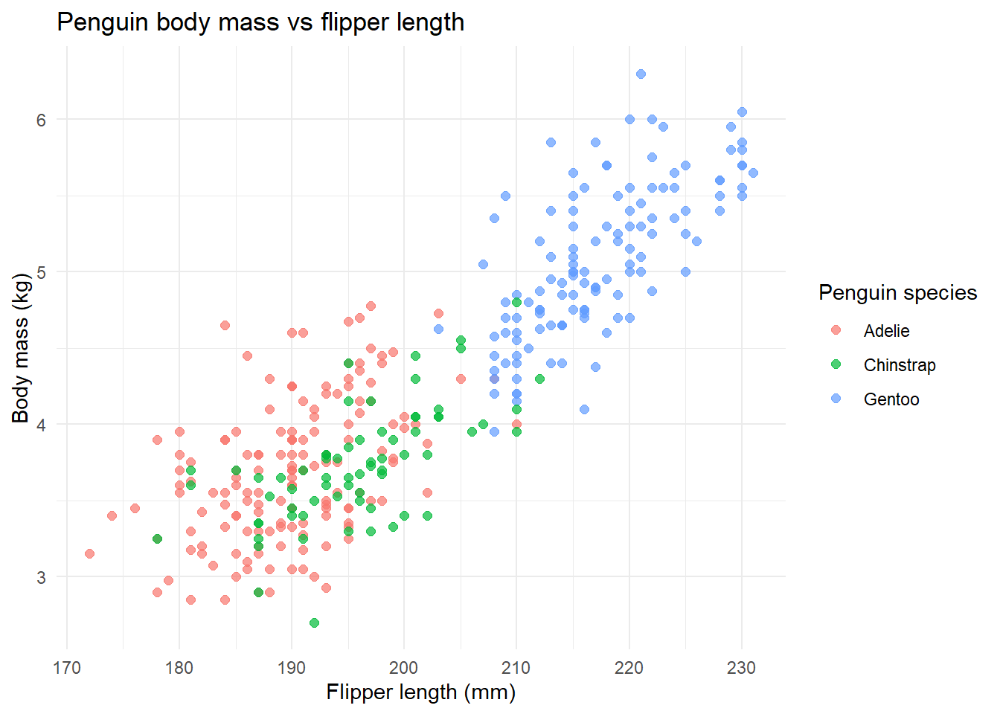

library(tidyverse)Penguin Data Analysis
1. Introduction
This report explores the relationship between body mass and flipper length in three Antarctic penguin species: Adelie, Chinstrap, and Gentoo.
The analysis demonstrates how to import data, clean missing values, use a custom function, and visualize results.
2. Load packages
3. Import the data
The penguin dataset is stored as a CSV file in the project’s data folder.
# Identify this document's location within the project.
here::i_am("reports/penguins.qmd")
# Build the full path from the project root.
data_file <- here::here("data", "penguins.csv")
# Show exactly which file will be read.
print(data_file)[1] "C:/Users/steven.guidos/OneDrive - NINA/Desktop/R/Steven_course_2026/data/penguins.csv"# Give a useful error if the file is unavailable.
if (!file.exists(data_file)) {
stop("CSV not found at: ", data_file)
}
# Import the original, uncleaned data.
penguins <- read.csv(data_file)
head(penguins) species island bill_len bill_dep flipper_len body_mass sex year
1 Adelie Torgersen 39.1 18.7 181 3750 male 2007
2 Adelie Torgersen 39.5 17.4 186 3800 female 2007
3 Adelie Torgersen 40.3 18.0 195 3250 female 2007
4 Adelie Torgersen NA NA NA NA <NA> 2007
5 Adelie Torgersen 36.7 19.3 193 3450 female 2007
6 Adelie Torgersen 39.3 20.6 190 3650 male 20074. Explore the original data
Now we can make sure the data looks alright.
summary(penguins) species island bill_len bill_dep
Length :344 Length :344 Min. :32.10 Min. :13.10
N.unique : 3 N.unique : 3 1st Qu.:39.23 1st Qu.:15.60
N.blank : 0 N.blank : 0 Median :44.45 Median :17.30
Min.nchar: 6 Min.nchar: 5 Mean :43.92 Mean :17.15
Max.nchar: 9 Max.nchar: 9 3rd Qu.:48.50 3rd Qu.:18.70
Max. :59.60 Max. :21.50
NAs :2 NAs :2
flipper_len body_mass sex year
Min. :172.0 Min. :2700 Length :344 Min. :2007
1st Qu.:190.0 1st Qu.:3550 N.unique : 2 1st Qu.:2007
Median :197.0 Median :4050 N.blank : 0 Median :2008
Mean :200.9 Mean :4202 Min.nchar: 4 Mean :2008
3rd Qu.:213.0 3rd Qu.:4750 Max.nchar: 6 3rd Qu.:2009
Max. :231.0 Max. :6300 NAs : 11 Max. :2009
NAs :2 NAs :2 Check for missing values
colSums(is.na(penguins)) species island bill_len bill_dep flipper_len body_mass
0 0 2 2 2 2
sex year
11 0 Some observations contain missing measurements. For our analysis, we need body mass and flipper length.
5. Clean the data
Here we can use a custom function stored in R/functions.R.
The function removes observations with missing body mass or flipper length and converts body mass from grams to kilograms.
source(here::here("R", "functions.R"))
penguins_clean <- clean_penguins(penguins)
head(penguins_clean) species island bill_len bill_dep flipper_len body_mass sex year
1 Adelie Torgersen 39.1 18.7 181 3750 male 2007
2 Adelie Torgersen 39.5 17.4 186 3800 female 2007
3 Adelie Torgersen 40.3 18.0 195 3250 female 2007
4 Adelie Torgersen 36.7 19.3 193 3450 female 2007
5 Adelie Torgersen 39.3 20.6 190 3650 male 2007
6 Adelie Torgersen 38.9 17.8 181 3625 female 2007
body_mass_kg
1 3.750
2 3.800
3 3.250
4 3.450
5 3.650
6 3.625penguins_clean <- clean_penguins(penguins)
head(penguins_clean) species island bill_len bill_dep flipper_len body_mass sex year
1 Adelie Torgersen 39.1 18.7 181 3750 male 2007
2 Adelie Torgersen 39.5 17.4 186 3800 female 2007
3 Adelie Torgersen 40.3 18.0 195 3250 female 2007
4 Adelie Torgersen 36.7 19.3 193 3450 female 2007
5 Adelie Torgersen 39.3 20.6 190 3650 male 2007
6 Adelie Torgersen 38.9 17.8 181 3625 female 2007
body_mass_kg
1 3.750
2 3.800
3 3.250
4 3.450
5 3.650
6 3.625Check the cleaning results
nrow(penguins) - nrow(penguins_clean)[1] 2The final calculation tells us how many observations were removed during cleaning.
6. Create a figure
Now we can investigate the relationship between flipper length and body mass across penguin species.
ggplot(
penguins_clean,
aes(
x = flipper_len,
y = body_mass_kg,
color = species
)
) +
geom_point(size = 2, alpha = 0.7) +
labs(
title = "Penguin body mass vs flipper length",
x = "Flipper length (mm)",
y = "Body mass (kg)",
color = "Penguin species"
) +
theme_minimal()
7. Summary by species
We calculate the average body mass for each species.
penguins_clean |>
group_by(species) |>
summarise(
mean_body_mass_kg = mean(body_mass_kg),
n = n(),
.groups = "drop"
)# A tibble: 3 × 3
species mean_body_mass_kg n
<chr> <dbl> <int>
1 Adelie 3.70 151
2 Chinstrap 3.73 68
3 Gentoo 5.08 1238. Conclusion
Flipper length and body mass are correlated :D